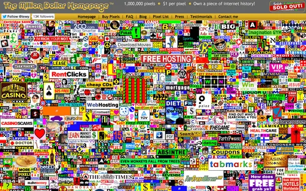

Stranger websites

On this website you will find links to the strangest websites on the entire internet
A short description of each one
Pikachizer: Translate any text into Pikachu's language, a fun tool created by bored developers who achieved unexpected success.
Cat Bounce: A website dedicated exclusively to jumping cats. Moving the mouse makes the cats bounce, turning it into an addictive and absurd form of entertainment.
Highest: The world's longest webpage, with 18.94 kilometers of content. You can scroll with your mouse or use the virtual "elevator" to reach the end.
Strobe: Strobe: A website that displays a stroboscopic illusion for 30 seconds, altering your vision and causing mind-blowing visual effects (not recommended for people with epilepsy).
ZoomQuilt: It allows you to explore fantastic worlds through a smooth and continuous zoom, discovering landscapes and creatures every time you zoom in.
Nooooooooooooooo!: A button that plays a looped "No!" shout every time you press it, ideal for those who have trouble saying no.
First Person Tetris: A version of the classic Tetris where you play from the player's perspective, rotating the pieces with the arrow keys on the keyboard.
This Person Does Not Exist: It generates faces of people that do not exist using artificial intelligence, with realistic and varied faces.
Fake Name Generator: Creates fake names, addresses, birth dates and complete data, useful for tests or pranks.
The Useless Web: Pressing the "Please" button takes you to a completely random and meaningless page, different each time.